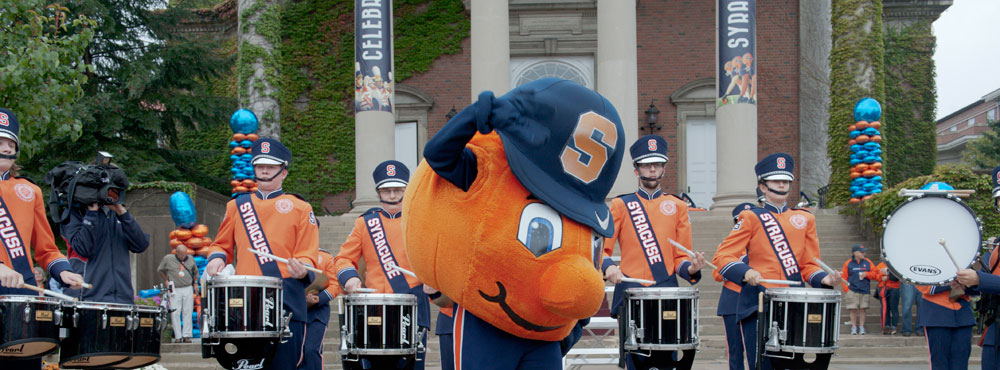
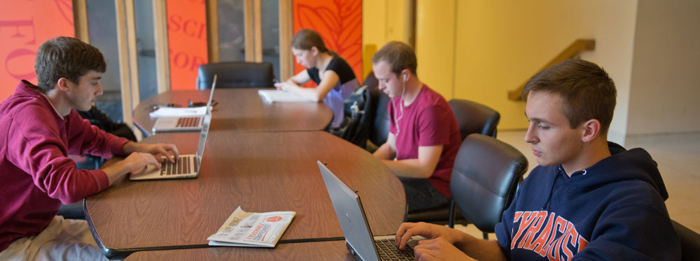
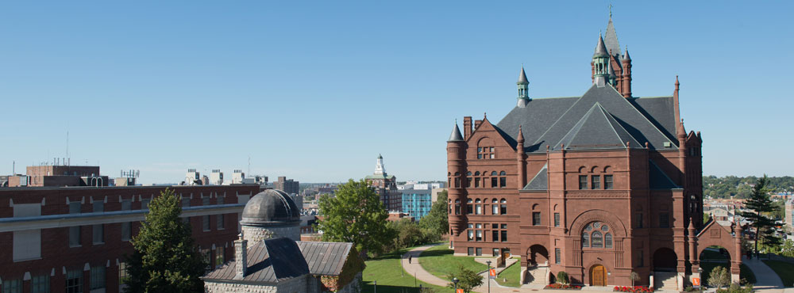

Syracuse University

Search SU web






Kent D. Syverud, Dean of the School of Law at Washington University in St. Louis, has been selected to be the 12th Chancellor and President of Syracuse University. The announcement was made following a unanimous vote by SU's Board of Trustees. Read Chancellor-designate Syverud's remarks to the SU communityKent Syverud Named 12th Chancellor at Syracuse University

Eric Liu, civic entrepreneur, author, and founder of Guiding Lights Network, will present "The True Meaning of Patriotism" on Tuesday, October 22 at 7:30 p.m. at Hendricks Chapel. Read more

Syracuse University values diversity, is committed to inclusion and seeks to provide access for all people, including those with disabilities. Visit Accessible SU for the latest information on disability and accessibility at SU.
The urban food cooperative offers fresh and affordable food in an area of Syracuse that until now has had few other nutritious options. Read more.
A musical extravaganza that brings to life all the favorite Dr. Seuss characters is on stage through October 20. Read more.
"Telling the Stories" gathered oral histories from those who have firsthand knowledge of Pan Am Flight 103. Read more.
As the leaves change and the temperatures cool, Rachel Samples '14 shows us the backdrops that make for an alluring autumn on the SU hill.
The Southside Community Coalition and Syracuse University’s South Side Initiative Office celebrate the grand opening of the Eat to Live Food Cooperative, located at 2323 S. Salina Street.
October 18, 2013 (All Day)
Slocum Hall atrium
The School of Architecture has designed and constructed an installation in the atrium of Slocum Hall that remembers and honors those who were lost. The collaborative effort of the students and faculty demonstrates the ability of architecture to act as an agent of change through both cooperative participation and physical expression. A closing reception will be held on Friday, Oct. 18 at 5 p.m. in the atrium of Slocum Hall.
More infoOctober 18, 2013 (All Day)
Newhouse 1 lobby
October 18, 2013 at 10:00 AM
114 Bird Library
October 18, 2013 at 12:00 PM
105 Link
October 18, 2013 at 12:00 PM
352 Eggers Hall

Visit campus online! Take a walking tour with our virtual tour guide to explore the sights of our beautiful campus. Visit the Quad, academic buildings, the Carrier Dome, and more. Begin tour. Bird Library also offers a virtual tour highlighting library places, services and collections. Web, slide show and video versions are available.